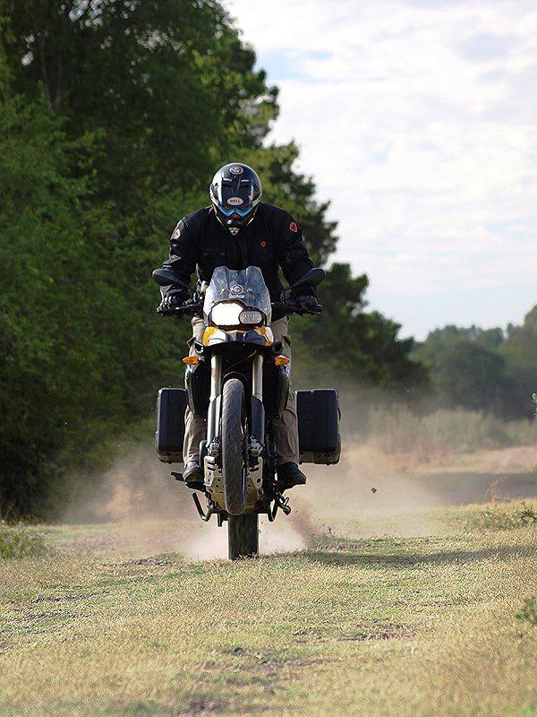

Todas las motos requieren un servicio de mantenimiento en sus suspensiones. No siempre el indicio para hacer un service es la aparición de una pérdida de fluidos, éstos con el uso y el correr del tiempo se van degradando y contaminando, haciendo que pierdan muchas de sus propiedades.
En nuestro taller te brindamos el servicio de mantenimiento preventivo y/o correctivo de tus horquillas y amortiguadores. Nos especializamos en la reparación de todo tipo de amortiguadores hidráulicos, presurizados, con controles electrónicos, suspensiones activas, etc.
Las ventajas de realizar estos servicios de mantenimiento son muchas, entre ellas podemos mencionar principalmente un andar más seguro, suave y confortable, un menor desgaste de neumáticos y transmisiones, y la prolongación de la vida útil saludable de tus suspensiones. Realizamos reformas para reducir la altura de tu moto de forma segura. Brindamos servicios a motos Trail, Touring, Custom, Pista y Maxiscooters.
Contactanos para obtener más información acerca de nuestros servicios!
Pedir presupuesto